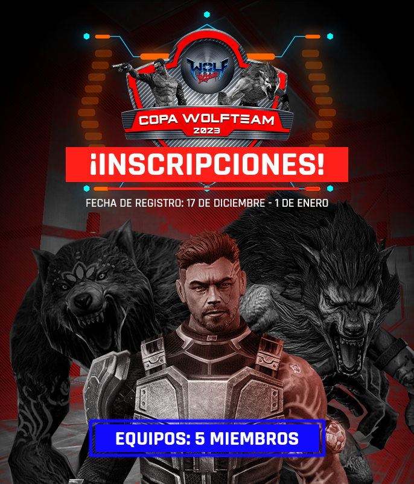
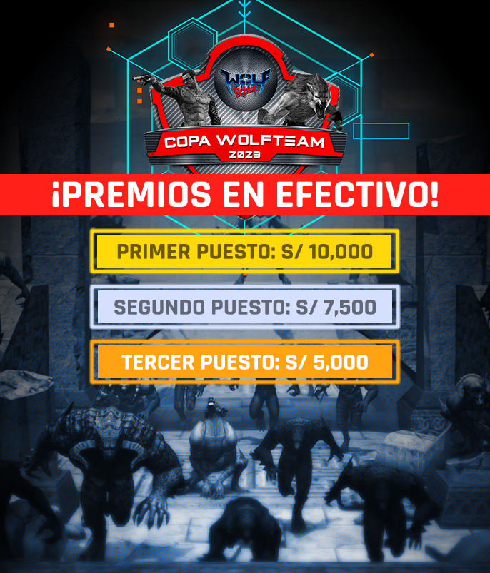

-
Información
-
¿Que es la copa wolfteam 2023?
La Copa WolfTeam 2023, es el torneo Internacional en el que nuestros Softnyx Gamers se reúnen para darnos la competencia más emocionante y exigente del año.
En esta edición, se estará premiando a los mejores equipos de nuestros juegos con más de 20,000 soles en premios.

Este año, veremos a jugadores de Lima, provincia, Bolivia y Colombia enfrentándose en una gran final presencial.
¿Vives fuera de Lima? ¡No hay problema! Los viáticos estarán cubiertos para los clasificados a la SEMIFINAL*. ¡No pierdas la oportunidad de ser parte del evento Softnyx más importante de la temporada!
*Gastos cubiertos para los participantes de provincia y extranjero incluyen pasajes, alimentación y estadía.
-
Fechas del torneo
-
Bases y reglas del torneo
Todo jugador debe cumplir con las siguientes normas de conducta, el incumplimiento dará lugar a sanciones.
Reglas generales
Para poder participar en el torneo un jugador debe ser mayor de edad (+18). En caso contrario, deberá presentar una carta de autorización de sus padres o representante legal.
Los jugadores que avancen a la etapa presencial del torneo deberán portar sus 3 dosis de vacuna COVID-19.
Reglas de comportamiento
Todo jugador debe cumplir con las siguientes normas de conducta, el incumplimiento dará lugar a sanciones.
No se permitirá el uso de lenguaje o comportamiento ofensivo entre miembros del mismo equipo o dirigido a miembros del equipo contrario. (Al llegar a tres llamados de atención, el equipo será descalificado).
- No se permite la discriminación ni las conductas tóxicas, si un jugador es acusado o denunciado, se le impedirá participar en esta edición y se evaluará su caso (las acusaciones deben ser con pruebas fehacientes).
- El equipo que no cumpla con las fechas acordadas y su equipo se retire del torneo será sancionado, no podrá participar en la siguiente temporada.
Reglamento del torneo.
Equipos y jugadores.
Los jugadores podrán participar en el torneo únicamente a través del registro, que será público. El número previsto de equipos para participar en el torneo es de 30 a 50. Cada equipo debe estar formado por 5 jugadores, si alguno de ellos está ausente, se le permitirá jugar con hasta 4 de ellos.
Zona horaria.
El horario que se utilizará será (GMT-5) y todos los participantes son responsables de estar atentos al horario.
Administración del Torneo.
Los administradores del torneo serán responsables de la comprensión y aplicación de las reglas. En caso de eventuales errores de interpretación, el administrador podrá modificar la decisión aún después de haberla aplicado, a fin de mantener el orden en la competencia.
Modificaciones a las reglas.
La dirección del torneo se reserva el derecho de cambiar o actualizar las reglas en cualquier momento, con el fin de resolver los conflictos ocasionados en el desarrollo del evento. Las nuevas reglas serán actualizadas en este documento e informadas a todos los capitanes de equipo.
Contacto con el administrador del torneo.
Los participantes pueden contactar a los administradores del torneo a través del canal oficial de DISCORD del torneo.
El uso del indicativo.
Todos los jugadores deben tener el indicativo con el que fueron registrados. No se permiten indicativos ofensivos o que inciten a la violencia.
Difusión de juegos.
Los equipos no pueden negarse a que sus juegos se transmitan en Facebook o cualquier otra plataforma utilizada. Al mismo tiempo, está estrictamente prohibido que un jugador transmita en vivo el juego desde su punto de vista, que una organización transmita desde su página sus juegos o que otro lanzador o canal de transmisión lo haga sin el permiso de la dirección del torneo, el incumplimiento de Cumplir con estos puntos supondrá la eliminación directa.
Cuenta de juego.
Cada jugador debe tener su cuenta personal de Softnyx, y está totalmente prohibido prestar la cuenta a otros usuarios. En caso de ser chequeado, el o los jugadores serán sancionados con la prohibición del torneo y el equipo será descalificado de la competencia.
Cambios y número de jugadores por equipo.
Todos los equipos podrán inscribir 5 jugadores y deberán elegir al capitán que será el encargado de recibir la información. Está prohibido cambiar o añadir integrantes una vez que el equipo juega su primer partido, ya que a partir de ese momento la alineación se vuelve "oficial".
Horario de los juegos.
Todos los juegos serán programados por la administración del torneo.
Ausencia del equipo y número mínimo de jugadores en un partido.
Un equipo será declarado derrotado por incomparecencia si no logra tener al menos 4 jugadores hasta 15 minutos después de la hora acordada, de lo contrario, podrá jugar con un mínimo de 4 jugadores o perder el partido.
Calendario y duración de los eventos.
La organización se reserva el derecho de modificar el inicio y final de la competición, según el calendario interno establecido. Los equipos se comprometen a respetar las fechas y horarios establecidos por la organización.
Demostraciones y repeticiones.
Softnyx se reserva el derecho de almacenar las demos y repeticiones de los juegos que se hayan jugado, así como de producir contenido con el material. Este contenido también estará disponible para todos los participantes que lo soliciten.
Servidor.
Softnyx estará a cargo de la creación de un servidor privado para el desarrollo de este torneo. En caso de cualquier falla en el sistema del servidor, los jugadores deben esperar las instrucciones del administrador.
Eliminación del equipo.
Los equipos que violen las reglas y la organización lo vea como una falta grave serán eliminados inmediatamente.
Público.
Solo los jugadores, administradores u observadores pueden ingresar al servidor, cualquier persona fuera de ellos o la administración del torneo será excluida de los servidores de la plataforma y los canales de voz en el Discord oficial.
Etapa Clasificatoria.
Todos los equipos inscritos se dividirán en 4 grupos, donde competirán en una liga (todos los partidos de liga serán Bo2), los 2 equipos con mejor puntaje por grupo avanzarán a los playoffs.
Etapa de playoffs.
La fase de playoffs tendrá lugar una vez finalizada la fase de clasificación, y estará formada por 8 equipos. En el caso de las semifinales será al mejor de 3 (Bo3) y en la gran final será al mejor de 5 (Bo5).
-
Inscribite ahora
¿Ya tienes listo a tu equipo?
El equipo debe elegir al líder, quien tendrá la función de velar por el cumplimiento de las reglas y brindar la información necesaria sobre toda la agrupación.
El líder deberá llenar el formulario de inscripción, anotando correctamente la información requerida en él.

Si tienes dudas con respecto al proceso de inscripción o deseas solicitar el documento “Autorización de menores”, puedes comunicarte al correo: torneo@softnyx.com
Es importante que el líder permaneza atento a su buzón de correo electrónico, en caso necesitemos comunicarnos con el equipo.
Recomendamos hacerlo desde un correo electrónico de uso frecuente.
Recuerda que:
1. Al inscribir a a tu equipo mediante el formulario, estás aceptando las Bases y Reglas del Torneo.
2. Deberás tener disponibilidad para participar en las clasificatorias presenciales y en el enfrentamiento final (ver fechas y países excluidos en "Bases y reglas del torneo".
3. Si los datos son incorrectos tu equipo será descalificado y no podrá participar al torneo.
4. Si tu equipo reside fuera de Lima y existe un menor de edad entre sus integrantes, este deberá recibir la autorización de sus padres para viajar, en caso clasificar a los cuartos de final en Lima. Puedes solicitar el documento "Autorización de Menores" al correo: torneo@softnyx.com
5. La información inscrita no podrá ser modificada posteriormente.
-
Gran Final
